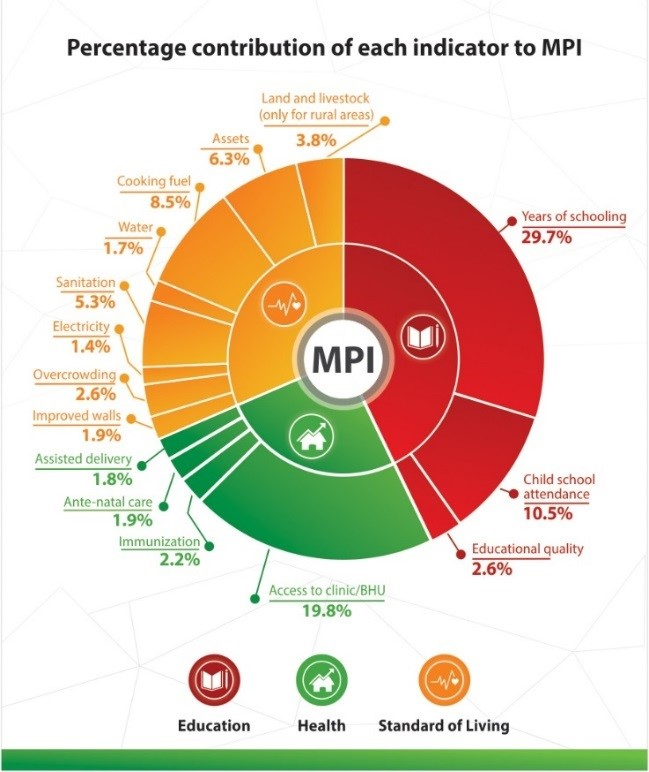
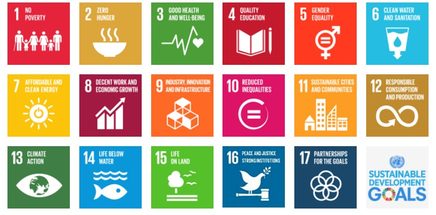

Connecting researchers from Pakistan and Britain to tackle developmental challenges faced by Pakistan
Connecting researchers from Pakistan and Britain to tackle developmental challenges faced by Pakistan

Connecting researchers from Pakistan and Britain to tackle developmental challenges faced by Pakistan
UK Pakistan Science & Innovation Global Network (UP-SIGN) Charter
UK-Pakistan Science Innovation Global Network (UP SIGN) will bring academics together to raise awareness and develop solutions to address the economic and social challenges Pakistan. We will seek to improve Communication, Coordination and Cooperation between the Pakistan and UK institutions on all levels from universities, public and private organisations, the business sector and NGOs. The Network will bring together academics and professionals (e.g. physical, biological , biomedical sciences, biomaterials, engineering, computational, social sciences, law, economists, educationalists, etc.) and develop subject specific team leaders in the UK in topics which are in line with the 17 UN Sustainable Development Goals (SDG) very pertinent to Pakistan (energy, healthcare, food security, climate change, gender, etc.). We are an inclusive organisation and welcome membership from people of any background and gender who would like to support UP SIGN core mission. The specific objectives are:
- Outreach: to raise awareness and help to focus UK , Pakistan and global funding and the public interest towards the current situation in Pakistan and the need for urgent targeted support for capacity building of research carrying human capital and infrastructure. This will include giving talks, hosting events, delivering online lectures and outreach activities through using electronic media to get across the message the stakeholders including academic and public (websites, newsletters, & social media)
- Networking: To act as a forum to bring together academics and industry professionals who are in the UK with a sympathetic attitude towards the problems of Pakistan (explaining the needs and then showcasing the good work). Support better UK-Pakistan (or UK-UK or Pak-Pak) Networking (to act as a UK network for coordination and mentoring of high quality academics e.g. for career development and GCRF or other funding schemes). Maintain a list of top Pakistani researchers who could help to coordinate things in Pakistan.
- Advocacy: To influence UK and Pakistani funding agencies and universities to target the relevant UN SDG areas that will maximise benefit and impact in both countries. Furthermore, to engage with UK and Pakistani Politicians or global funding agencies to speak up and support collaboration with Pakistan through brining Pakistan on the UK and other funding agencies landscape (RCUK, Universities, British Council, charities etc.)
- Education and Mentoring: To offer education and training opportunities and support for good quality Pakistani PhD & Masters students and researchers (via visits to UK or via academics travelling to Pakistan). The network can act as an honest broker to ensure Pakistani researchers are well looked after and mentored correctly and supported with experts having expertise related to UN SDGs. This will help build and sustain the UK-Pakistan links for the longer term. Furthermore, to maximise the use of digital technology for knowledge and mutual information exchange and to identify areas of mutual benefit for both the UK and Pakistan though addressing the unique opportunities each country provides and shared interests.
- Advisory roles: Direct or in-kind support of Pakistani research (To act as a voice / point of contact / advisory panel of experts for the UK academic community when interfacing with Pakistan).
Structure and Board of Management
A steering committee was elected to decide strategy of the network. The network is seeking initial funding and government backing from both countries. This commitment should be made for a minimum period of 3 years. There is an option to invite board nomination from UK and Pakistan government which will be explored over the course of time.
- Chairperson: Prof Jawwad Darr
- Deputy Chair: Prof Ihtesham Ur Rehman
- Secretary-General: Dr Khalid Mahmood
- Gender lead: Fazilda Nabeel
- Outreach: Prof Akram Khan
- Treasurer: Dr Waheed Afzal
- Enterprise: Dr Farid Tariq
Research and Challenge Leads
UP SIGN has identified key challenge areas to promote research and collaboration opportunities with Pakistan.
- Agriculture and Food: Prof Tariq Butt, supported by Dr Khalid Mahmood (Rothamsted)
- Professor Munir Iqbal(Pirbright) support by Dr Muhammad Munir (Lancaster University)
- Biomedical Materials: Prof. Ihtesham ur Rehman (Sheffield)- [support TBC)
- Water: Prof Fayyaz Memon AND Fazilda Nabeel
- Energy: (Renewables and Energy Storage): Prof Jawwad Darr, JAD (UCL) - Supported by Dr Waheed Afzal (Aberdeen)
- Human Health and Nutrition: Prof Zaheer-Ud-Din Barbar, University of Huddersfield supported by Dr Jaleel Miyan, University of Manachester
- Environment Sustainability and Waste: Dr Waheed Afzal
- Computational Science and Big Data: Prof Ashiq Anjum, Derby, supported by Prof Siraj Sheikh, Coventry University
- Enterprise and Youth: Dr Farid Tariq (Imperial College) supported by Dr Sana Waheed
- Petrochemicals, Dr Muhammed H Haider, Olefins and Aromatics
UN Stainable Development Goals
Pakistan failed to achieve the Millennium Development Goals by 2015 due to various reasons. There are 9.8 million malnourished children in Pakistan and the country is ranked third in the world with the greatest number of children with stunted growth. It is estimated, that 45 percent of the children in the country are stunted and 39 percent do not have access to decent sanitation. According Multidimensional Poverty Index (MPI) based on the Alkire- Foster methodology, 4 out of 10 Pakistanis, 39 percent are living below poverty line (UNDP, 2016). More than 40 percent of the people lack access to clean drinking water. Literacy rate is 60 percent which is the lowest in the region. So far as environment is concerned, Pakistan is one of the top ten countries in the world which are badly hit by global warming and climate changes.
There are obvious regional disparities in poverty across Pakistan. The proportion of people identified as multi-dimensionally poor in urban areas is significantly lower than in rural areas – 9.4% and 54.6%, respectively. Further heterogeneities were found when looking at results at the provincial level. In 2014/15, MPI headcount ratios ranged from 31.4% in Punjab (with an intensity of 48.4%), to 71.2% in Balochistan (with an average intensity of 55.3%).
With respect to the percentage which each of the 15 indicators contributes to overall multidimensional poverty in Pakistan, the greatest contribution to national poverty derives from years of schooling (29.7%), followed by a lack of access to healthcare facilities (19.8%) and child school attendance (10.5%). If aggregated by dimensions, the greatest contribution to poverty stems from educational deprivation (42.8%), followed by living standards (31.5%) and healthcare (25.7%).
The development of agriculture can play a direct role in rural poverty alleviation, since most rural poor depend on agricultural activity for providing the main source of their income and employment (FAO-2010). It plays a vital role in food security and improving the health of the nation through producing nutritious food and conserving our natural capital including biodiversity, water and air quality.
Science innovation contributes enormously in social, cultural and economic development of a country. Investment in science innovation and delivering economic well-being of a country can be exemplified for OECD nations, South Korea and China.
The quality research and innovation has the potential to address the challenges faced by Pakistan, which relates to both economic and wellbeing of it’s more than 185 million people. Although in recent times, the government has made significant investments in higher education and research infrastructure; however, there are still several challenges requiring improvement in the skill-base of the scientific community to deliver impact.
Pakistan needs to address implementation of UN SDGs target of 2030. Besides poor governance, the other important factor is a disconnection between the higher education and research system. There is a need to develop inter-disciplinary solutions to these problems.
 Quotes and Philosopy for Progress
- Albert Einstein: To raise new questions, new possibilities, to regard old problems from a new angle, requires creative imagination and marks real advancements in science.
- Richard Feynman: It doesn't matter how beautiful your theory is, it doesn't matter how smart you are. If it doesn't agree with experiment, it's wrong.
- Alan Turing: We can only see a short distance ahead, but we can see plenty there that needs to be done. I propose to consider the question, 'Can machines think? A computer would deserve to be called intelligent if it could deceive a human into believing that it was human.
- Thomas Edison: There is a way to do it better- find it.